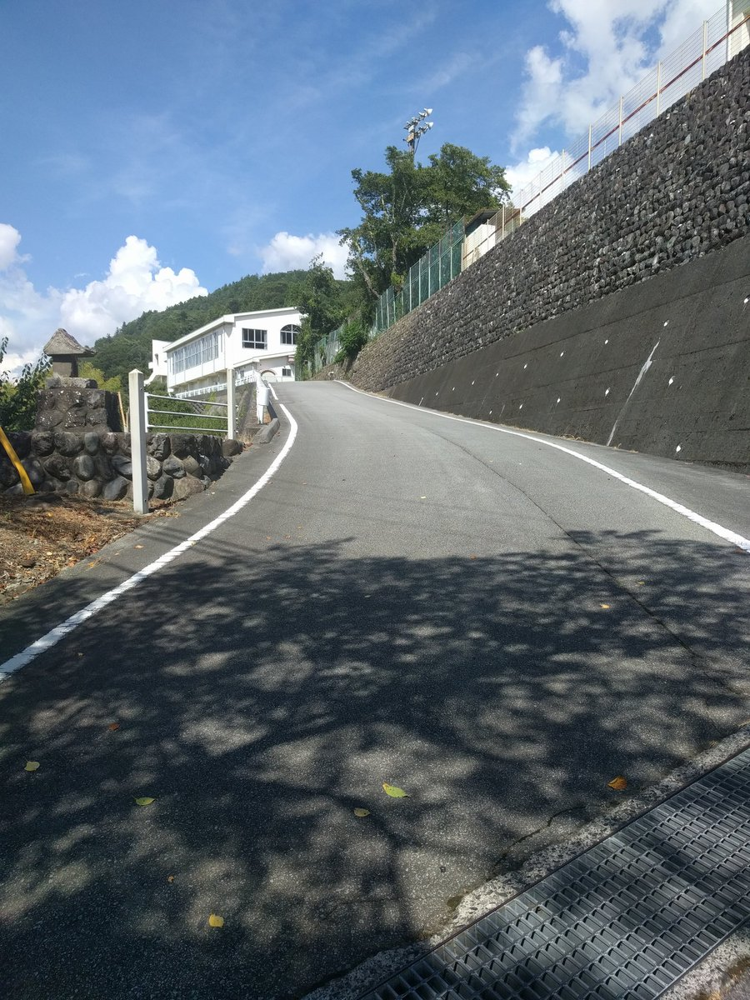
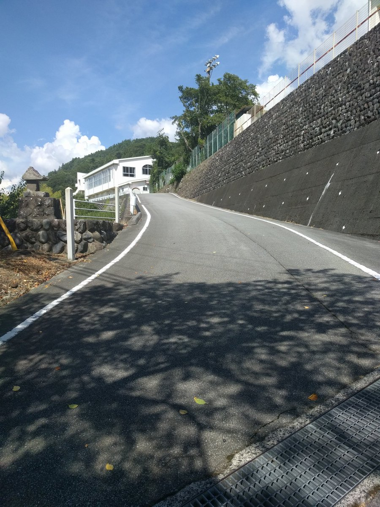

アニメ"ゆるキャン"の聖地巡礼。キャンプ場以外を中心にまわった。始めに山梨市駅からほったらかし温泉まで登山。 JKでも登れたんだからと余裕をこいていたがかなりツラい。道中にある笛吹川フルーツ公園でソフトクリームを食べてなんとか登り切った。 しかし入浴はせずにそのまま下山(時間は有限なのだ!)。下山したら甲府駅まで戻り志麻リンの愛車、ヤマハのVinoを見学。 その後、甲斐常葉駅で本栖高校(外観)を見学したら波高島駅(大垣さんと犬山さんの最寄り駅)で下車し、2人が働くバイト先ゼブラ身延店で メンチカツとカレー麺を購入。ここにはグッズも沢山あったので駅から遠いけど行った方がいい。その後、いよいよ身延駅で念願のみのぶまんじゅう を食す。最後に内船駅(なでしこの最寄り駅)に行...こうとしたところで時間と体力が限界に達したのでここは次回のお楽しみ。


天保山でヘリコプター搭載護衛艦かが(DDH-184)を見学。遅刻したせいで人がごったかえしていた。まあ仕方ないので 列に並びつつ外観を写真に収める。家族連れと艦これの人と軍事系の人が同じ場所に集まってるのは割と珍しい気がした。 艦内に入り噂のエレベータで甲板へ。OPS-50A対空レーダー、20mm機関砲、SeaRamを見学。説明ボードには見覚えのある 女の子が(艦〇れとは関係ないもんね!)。ひとしきり見てまわったら再びエレベータで艦内に戻り見学終了。その後、87式 偵察警戒車と加賀(ドール)を見学してこの日はこれにて退散。


駅前に新しい顔だしパネルが置かれてから初めての大洗聖地巡礼。西住さんを差し置いて何故か五十鈴さんが中央にいるが 確かに様になっている。この日は商店街を通らずにココス前を通り磯前神社へ。置かれたばかりの絵馬を眺めつつお参りを済ませ、 我が校の隊長、ミカさんとツッコミなアキちゃんに会いに浅野丸へ。その後、日野屋石油店で継続高校指定の軍手を購入。 山戸呉服店で継続高校指定のマフラータオルを購入。更に江口又新堂でコミケに先んじてとある写真集を購入。 学校指定の衣類が揃ったところで、この日は明日のコミケに向けて体力温存のために帰還。また夏に会おうね。


新しいキャラクターパネルが置かれてから初めての大洗。皆さん一層可愛くなっていた。(クラーラさんなどはポージングも変わってる!) 商店街を通りウスヤ肉店で朝食を済ませ、磯前神社でお参り。その後海辺でエキシビションマッチでのKV-2の砲弾跡を見学した後、喫茶ブロンズ で鉄板ナポリタンをいただき、アウトレットで買い物を済ませ、この日はこれにて退散。明日に備えるため都内に戻る。


はたかぜ型護衛艦しまかぜ(DDG-172)を見学。割と早く着いたので人もそれほど多くなかった。乗艦したらまず対空ミサイルSM-1を見学。イラスト もカッコいい(写真なし)。その後、5インチ単装砲、アスロックランチャー、魚雷、ハープーンミサイルを見学して島風パネルに挨拶を済ませる。その後 SM-1とアスロックの武器操法を見学(動画なし)させてもらいこの日は終了。お疲れ様でした。


提督さんと横須賀をめぐる。軍艦めぐりツアーに参加し、そうりゅう型とおおよどの出港、そしてロナルド・レーガン(全て外観のみ)等を見学する。 その後、艦これとコラボしたカレー屋さんで海軍カレーを食す。そしていよいよ三笠記念館へ。閉館ギリギリまで艦内を見学。